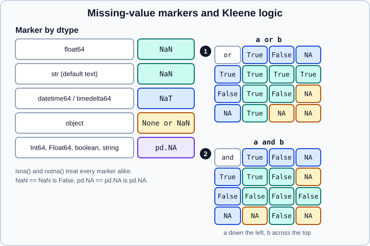

Missing Data in pandas
|
This content was generated with the assistance of AI and should be verified against the official documentation before being relied on in production. |
Real data has gaps: a sensor that did not report, a form field left empty, a join that found no partner. pandas has a small, consistent vocabulary for these gaps, and understanding it is the difference between an analysis that quietly ignores missing rows and one that quietly invents numbers. This page covers the markers pandas uses, how they behave in arithmetic, comparisons and logic, and every tool for detecting, dropping, filling and interpolating them. It targets pandas 3.1 on Python 3.13 or 3.14 (NumPy 2.5) and was checked in October 2026; every example was run with Python 3.13 and pandas 3.1.0, and the printed output is the real output. The statistical side of the question (why values are missing and which treatment is defensible) is covered in Data Cleaning and Preparation; the mechanics live here.
All examples start with the usual imports and are independent of one another:
import numpy as np
import pandas as pdThe markers pandas uses
pandas does not have one missing value; it has one per family of dtype, and the functions that detect them
(isna, notna) treat all of them alike.

| Dtype family | Marker | Notes |
|---|---|---|
|
|
An ordinary IEEE 754 float. Integers and Booleans cannot hold it, so a gap turns an integer column into floats. |
|
|
Text is NaN-based by default; see Text Data and the str Dtype. |
|
|
"Not a time"; |
|
|
Any of the three can sit in the same column and all are detected as missing. |
|
|
The nullable dtypes. See Nullable Integer and Boolean Dtypes. |
|
|
The code is hidden; the missing value is never listed as a category. See Categorical Data. |
import numpy as np
import pandas as pd
print(pd.Series([1.0, np.nan, 3.0]).isna().tolist())
print(pd.Series([1, None, 3]).dtype) # None became NaN, ints became floats
print(pd.Series(["a", None, "c"]).dtype, pd.Series(["a", None, "c"]).tolist())
print(pd.Series([1, None, 3], dtype="Int64").tolist()) # pd.NA, ints preserved
print(pd.Series(pd.to_datetime(["2026-01-01", None])).tolist())
print(pd.isna(None), pd.isna(pd.NaT), pd.isna(pd.NA), pd.isna(float("nan")))
print(pd.Series([True, False, None]).dtype) # object: Booleans cannot hold NaNOutput:
[False, True, False]
float64
str ['a', nan, 'c']
[1, <NA>, 3]
[Timestamp('2026-01-01 00:00:00'), NaT]
True True True True
objectThree consequences are worth remembering:
-
pd.isnullandpd.notnullare aliases ofpd.isnaandpd.notna. Use thenaspelling; it is the one the documentation and error messages use. -
A list that mixes numbers and
Nonebecomesfloat64with NaN, notobject. A list of Booleans with aNonestaysobject, because NaN is a float and Booleans have no floating form. -
Since pandas 3.0 the default text dtype is
str, and its missing value is NaN, soser.dtype == objectis no longer a way of asking whether a column holds text. Code written for pandas 2 that tests forNonein a text column should useisna()instead.
Detecting missing values
isna() returns a Boolean mask of the same shape; notna() is its inverse. Combined with sum, mean, any and
all it answers the first questions about any data set: how many gaps are there, where are they, and are whole rows or
columns empty?
import numpy as np
import pandas as pd
df = pd.DataFrame({"a": [1, np.nan, 3], "b": [np.nan, np.nan, 6], "c": ["x", None, "z"]})
print(df)
print(df.isna().sum()) # gaps per column
print(df.isna().mean().round(2)) # share of gaps per column
print(df.isna().any(axis=1).sum(), "rows have at least one gap")
print(df.isna().all(axis=1).sum(), "rows are entirely empty")
print(df[df.isna().any(axis=1)]) # inspect the incomplete rows
print(df.count()) # non-missing values per columnOutput:
a b c
0 1.0 NaN x
1 NaN NaN NaN
2 3.0 6.0 z
a 1
b 2
c 1
dtype: int64
a 0.33
b 0.67
c 0.33
dtype: float64
2 rows have at least one gap
1 rows are entirely empty
a b c
0 1.0 NaN x
1 NaN NaN NaN
a 2
b 1
c 2
dtype: int64Source: pandas API reference: DataFrame.isna.
count() is the complement of isna().sum(); size and len include the gaps. Always look at the pattern of
missingness (a column that is missing exactly when another column has a particular value is information, not noise)
before choosing a treatment.
Comparisons and equality
NaN is not equal to anything, including itself. That is the IEEE rule, and pandas follows it, so == can never be used
to find missing values.
import numpy as np
import pandas as pd
x = pd.Series([1.0, np.nan, 3.0])
print((x == np.nan).tolist()) # always False
print((x != x).tolist()) # the old trick: only NaN differs from itself
print((x > 2).tolist()) # a comparison with NaN is False
print(np.nan == np.nan, pd.NA == pd.NA, pd.NaT == pd.NaT)
print(pd.Series([np.nan]).equals(pd.Series([np.nan]))) # equals() treats gaps as equal
print((pd.Series([np.nan]) == pd.Series([np.nan])).tolist())Output:
[False, False, False]
[False, True, False]
[False, False, True]
False <NA> False
True
[False]Source: pandas API reference: Series.equals.
Use equals() (or pandas.testing.assert_frame_equal) to compare whole objects, because they treat NaNs in the same
position as equal. pd.NA is different from NaN: comparisons with it return pd.NA (unknown), not False, which
matters as soon as the result is used as a filter (next section).
pd.NA and three-valued logic
pd.NA means "the value exists but is unknown", and it behaves accordingly: any arithmetic or comparison with an
unknown value is unknown, except where the answer does not depend on the unknown.
import pandas as pd
print(pd.NA + 1, pd.NA * 0, pd.NA > 3)
print(pd.NA ** 0, 1 ** pd.NA) # 0 ** x and 1 ** x are known whatever x is
print(True | pd.NA, False | pd.NA) # or: True wins
print(False & pd.NA, True & pd.NA) # and: False wins
print(True ^ pd.NA)
b = pd.array([True, False, None], dtype="boolean")
print((b | True).tolist(), (b & False).tolist(), (~b).tolist())
try:
bool(pd.NA)
except TypeError as e:
print("TypeError:", e)Output:
<NA> <NA> <NA>
1 1
True <NA>
False <NA>
<NA>
[True, True, True] [False, False, False] [False, True, <NA>]
TypeError: boolean value of NA is ambiguousSource: pandas user guide: NA semantics.
The logic is Kleene’s three-valued logic, shown as truth tables in the figure above (marker 1 is or, marker 2 is
and). True or NA is True because the answer is True whatever the unknown turns out to be; False and NA is False for
the same reason. Everything else involving NA stays NA.
Two practical results follow:
-
A mask that contains NA cannot be used in an
if.bool(pd.NA)raisesTypeError, because the truth of an unknown statement is unknown. Fill the mask first:mask.fillna(False). -
Boolean indexing treats NA as False.
ser[mask]with a nullablebooleanmask silently drops the rows where the mask is NA, which is usually what you want but is worth knowing.
NumPy ufuncs on nullable arrays propagate NA in the same way; np.sqrt(pd.Series([4, 9], dtype="Int64")) returns a
Float64 series.
Calculations skip missing values
Reductions skip missing values by default (skipna=True), cumulative operations keep the gap in place, and
min_count controls what an all-missing or empty reduction returns.
import numpy as np
import pandas as pd
x = pd.Series([1.0, np.nan, 3.0])
print(x.sum(), x.mean(), x.count(), x.size)
print(x.sum(skipna=False), x.mean(skipna=False))
print(x.cumsum().tolist()) # the gap stays; the running total continues
print(x.diff().tolist(), x.pct_change().round(3).tolist())
print(x.to_numpy().sum()) # NumPy does not skip: nan
empty = pd.Series([np.nan])
print(empty.sum(), empty.sum(min_count=1), empty.prod(), empty.prod(min_count=1))
print(pd.Series([], dtype=float).sum()) # an empty sum is 0.0, an empty mean is NaN
print(x.rolling(2).sum().tolist()) # windows containing a gap give NaN
print(x.rolling(2, min_periods=1).sum().tolist())Output:
4.0 2.0 2 3
nan nan
[1.0, nan, 4.0]
[nan, nan, nan] [nan, nan, nan]
nan
0.0 nan 1.0 nan
0.0
[nan, nan, nan]
[1.0, 1.0, 3.0]The default of treating gaps as absent has a trap: the sum of an all-missing column is 0.0, not NaN. If a total of
zero would be misleading (no readings is not the same as readings that add up to zero), pass min_count=1. The same
holds for groups: a groupby group made only of NaN sums to 0.0 unless min_count is given. skipna=False restores the
NumPy behaviour of propagating the gap, which is the right choice when an incomplete total must not be reported.
Other places where the gap policy is a keyword:
-
groupby(..., dropna=False)keeps a group for missing keys; by default rows whose key is missing are left out of the result. -
value_counts(dropna=False)andnunique(dropna=False)count the missing values as a category. -
sort_values(na_position="first")andsort_index(na_position=...)decide where gaps are placed; the default is last. -
mergetreats NaN keys on both sides as equal and matches them, unlike SQL. Drop or fill missing keys first if that is not what you want. -
idxmax,idxmin,rank,corrandcovskip gaps (corrandcovuse pairwise-complete observations).
Introducing missing values on purpose
Gaps appear when you reindex, when you read a file and when a conversion fails. They can also be inserted directly.
import numpy as np
import pandas as pd
print(pd.Series([1, 2, 3]).reindex(range(5)).tolist()) # new labels get NaN
print(pd.to_numeric(pd.Series(["1", "x", "3"]), errors="coerce").tolist())
i = pd.Series([1, 2, 3])
i.iloc[0] = np.nan # an integer column may become float64
print(i.dtype, i.tolist())
j = pd.Series([1, 2, 3])
try:
j.iloc[0] = 1.5 # PDEP-6: lossy upcasting is an error
except TypeError as e:
print("TypeError:", e)
flags = pd.Series([True, False])
try:
flags.iloc[0] = np.nan
except TypeError as e:
print("TypeError:", e)
n = pd.Series([1, 2, 3], dtype="Int64")
n.iloc[0] = pd.NA # a nullable dtype keeps its type
print(n.dtype, n.tolist())
try:
pd.Series([1.0, np.nan]).astype(int)
except Exception as e:
print(type(e).__name__, e)Output:
[1.0, 2.0, 3.0, nan, nan]
[1.0, nan, 3.0]
float64 [nan, 2.0, 3.0]
TypeError: Invalid value '1.5' for dtype 'int64'
TypeError: Invalid value 'nan' for dtype 'bool'
Int64 [<NA>, 2, 3]
IntCastingNaNError Cannot convert non-finite values (NA or inf) to integer. Replace or remove non-finite values or cast to an integer type that supports these values (e.g. 'Int64')Setting NaN into an integer column is still allowed and moves the column to float64, but putting a non-integral float
into an integer column raises: pandas 3 no longer upcasts silently when a value does not fit (PDEP-6). Casting a column
that contains gaps to int raises IntCastingNaNError; use the nullable Int64 dtype if the values must stay integers.
In read_csv, read_excel and friends, na_values, keep_default_na and na_filter decide which strings count as
missing, and dtype_backend="numpy_nullable" reads integers and Booleans with gaps directly into nullable dtypes (see
CSV and Text Files).
Dropping missing data
dropna removes the rows (or columns) that contain gaps. The arguments say how strict the test is.
import numpy as np
import pandas as pd
df = pd.DataFrame({"a": [1, np.nan, 3], "b": [np.nan, np.nan, 6], "c": ["x", None, "z"]})
print(df.dropna()) # any gap in the row: drop it
print(df.dropna(how="all")) # only rows that are entirely empty
print(df.dropna(subset=["a", "b"], how="all")) # judge by selected columns only
print(df.dropna(thresh=2)) # keep rows with at least 2 real values
print(df.dropna(axis=1, how="all")) # columns instead of rows
print(df.dropna(subset=["a"], ignore_index=True)) # renumber the surviving rowsOutput:
a b c
2 3.0 6.0 z
a b c
0 1.0 NaN x
2 3.0 6.0 z
a b c
0 1.0 NaN x
2 3.0 6.0 z
a b c
0 1.0 NaN x
2 3.0 6.0 z
a b c
0 1.0 NaN x
1 NaN NaN NaN
2 3.0 6.0 z
a b c
0 1.0 NaN x
1 3.0 6.0 zhow="any" is the default; thresh (the minimum number of non-missing values) and how are mutually exclusive.
subset limits the test to some columns, which is almost always what you want, because a single sparse column should
not delete every row. Dropping is the easy choice and can bias results: if the rows with gaps differ systematically from
the rest, the remaining sample no longer represents the population.
As in most pandas methods, the inplace=True argument of dropna is deprecated in pandas 3.1 and emits a
Pandas4Warning (the warning class that announces removal in pandas 4, per PDEP-17). Reassign instead:
df = df.dropna().
Filling missing data
Filling with a value
fillna replaces gaps with a scalar, a per-column dictionary or a Series or DataFrame aligned on the labels.
import numpy as np
import pandas as pd
s = pd.Series([1.0, np.nan, np.nan, 4.0, np.nan, 6.0, np.nan])
print(s.fillna(0).tolist())
print(s.fillna(s.mean()).round(2).tolist())
df = pd.DataFrame({"a": [1, np.nan, 3], "b": [np.nan, 5, 6]})
print(df.fillna({"a": df["a"].mean(), "b": 0})) # a different value per column
print(df.fillna(df.mean())) # column means, aligned on column labels
try:
s.fillna(method="ffill")
except TypeError as e:
print("TypeError:", e)Output:
[1.0, 0.0, 0.0, 4.0, 0.0, 6.0, 0.0]
[1.0, 3.67, 3.67, 4.0, 3.67, 6.0, 3.67]
a b
0 1.0 0.0
1 2.0 5.0
2 3.0 6.0
a b
0 1.0 5.5
1 2.0 5.0
2 3.0 6.0
TypeError: NDFrame.fillna() got an unexpected keyword argument 'method'fillna(method="ffill") and fillna(method="bfill") were deprecated in pandas 2.1 and removed in pandas 3.0, as the
last example shows. The replacements are the dedicated ffill() and bfill() methods.
Filling with a column mean or median is the simplest imputation. It shrinks the variance and weakens correlations, and if it is done before splitting data into training and test sets it leaks information from the test set into the model. Estimate the fill value on the training data only; for modelling pipelines use an imputer inside the pipeline, as explained in Feature Engineering and Model Evaluation.
Propagating the last or next value
ffill (forward fill) carries the last valid observation forward; bfill (backward fill) pulls the next one back.
limit caps how many consecutive gaps are filled.
import numpy as np
import pandas as pd
s = pd.Series([1.0, np.nan, np.nan, 4.0, np.nan, 6.0, np.nan])
print(s.ffill().tolist())
print(s.ffill(limit=1).tolist()) # at most one gap per run
print(s.bfill().tolist()) # the trailing gap has no later value: stays NaN
df = pd.DataFrame({"a": [1, np.nan, 3], "b": [np.nan, 5, 6]})
print(df.ffill(axis=1)) # fill across columns instead of down rowsOutput:
[1.0, 1.0, 1.0, 4.0, 4.0, 6.0, 6.0]
[1.0, 1.0, nan, 4.0, 4.0, 6.0, 6.0]
[1.0, 4.0, 4.0, 4.0, 6.0, 6.0, nan]
a b
0 1.0 1.0
1 NaN 5.0
2 3.0 6.0Forward filling suits state-like data (a price that stays in force until the next quote) and is wrong for measurements
that should not persist. On grouped data, fill inside each group (df.groupby("id")["x"].ffill()), or the last value of
one group leaks into the first rows of the next.
Interpolation
interpolate estimates the gaps from the surrounding values. The default is linear interpolation that treats the
observations as equally spaced.
import numpy as np
import pandas as pd
s = pd.Series([1.0, np.nan, np.nan, 4.0, np.nan, 6.0, np.nan])
print(s.interpolate().tolist()) # trailing gap is filled with the last value
print(s.interpolate(limit=1).tolist()) # at most one gap per run
print(s.interpolate(limit_direction="both").tolist())
print(s.interpolate(limit_area="inside").tolist()) # never extrapolate beyond the ends
# Unequal spacing: positions matter
t = pd.Series([1.0, np.nan, 3.0, np.nan, 10.0], index=[0, 1, 2, 3, 10])
print(t.interpolate().tolist()) # ignores the index
print(t.interpolate(method="index").round(3).tolist()) # uses the numeric index
# Time-aware
days = pd.date_range("2026-01-01", periods=4, freq="D")
ts = pd.Series([1.0, np.nan, np.nan, 7.0], index=days)
print(ts.interpolate(method="time").tolist())Output:
[1.0, 2.0, 3.0, 4.0, 5.0, 6.0, 6.0]
[1.0, 2.0, nan, 4.0, 5.0, 6.0, 6.0]
[1.0, 2.0, 3.0, 4.0, 5.0, 6.0, 6.0]
[1.0, 2.0, 3.0, 4.0, 5.0, 6.0, nan]
[1.0, 2.0, 3.0, 6.5, 10.0]
[1.0, 2.0, 3.0, 3.875, 10.0]
[1.0, 3.0, 5.0, 7.0]The method argument selects the algorithm:
-
"linear"(default) ignores the index;"index"and"values"use a numeric index as the x-axis;"time"uses aDatetimeIndex. -
"nearest","zero","slinear","quadratic"and"cubic"are spline-based and need SciPy. -
"polynomial"and"spline"also needorder=;"pchip","akima","cubicspline"and"barycentric"are other SciPy-based smooth interpolators. -
limit,limit_direction("forward","backward","both") andlimit_area("inside","outside") restrict which gaps are filled.
The pad-style names such as method="pad" raise ValueError in pandas 3; use ffill(). High-order polynomials and
splines can overshoot between points (on a short series, cubicspline produces values below every observation), so prefer linear, pchip or akima unless there is a physical reason for a smooth curve.
Interpolating invents data; never interpolate the target variable of a model on the test set.
Replacing sentinel values
Many sources encode a missing value as a number or a string: -999, 9999, n/a, an empty string, a dash. Convert them to
real missing values as early as possible, because every statistic computed before that is wrong.
import numpy as np
import pandas as pd
r = pd.Series([1, -999, 3, -999])
print(r.replace(-999, np.nan).tolist())
print(r.mask(r == -999).tolist()) # same result with a condition
t = pd.Series(["a", "n/a", "", "c"])
print(t.replace({"n/a": np.nan, "": np.nan}).tolist())
df = pd.DataFrame({"x": [1.0, np.inf, -np.inf, np.nan]})
print(df["x"].isna().tolist()) # infinities are not missing
print(df["x"].replace([np.inf, -np.inf], np.nan).tolist())
m = pd.Series(["n/a", "N/A", "unknown", "ok"])
print(m.replace(r"(?i)^(n/a|unknown)$", np.nan, regex=True).tolist())Output:
[1.0, nan, 3.0, nan]
[1.0, nan, 3.0, nan]
['a', nan, nan, 'c']
[False, False, False, True]
[1.0, nan, nan, nan]
[nan, nan, nan, 'ok']Source: pandas user guide: Replacing values.
Infinity is not missing. isna() returns False for np.inf, and the old option mode.use_inf_as_na that treated
infinities as gaps was removed in pandas 3.0; replace them explicitly, as above. Better still, find out where they come
from (usually a division by zero) and decide what the real answer is.
For reading files, prefer the reader’s own options (na_values=["n/a", "-999"]) over post-hoc replacement: they are
faster and apply per column when given as a dictionary.
Combining sources
combine_first fills the gaps of one object with values from another, aligned on the labels; update writes the
non-missing values of another frame into this one; where and mask replace values by condition.
import numpy as np
import pandas as pd
a = pd.Series([1, np.nan, 3])
b = pd.Series([10, 20, 30])
print(a.combine_first(b).tolist()) # gaps in a come from b
s = pd.Series([1.0, np.nan, 4.0, 6.0])
print(s.where(s > 2).tolist()) # keep where True, NaN elsewhere
print(s.where(s > 2, 0).tolist()) # keep where True, 0 elsewhere
print(s.clip(2, 5).tolist()) # clip leaves gaps aloneOutput:
[1.0, 20.0, 3.0]
[nan, nan, 4.0, 6.0]
[0.0, 0.0, 4.0, 6.0]
[2.0, nan, 4.0, 5.0]Converting to dtypes that support missing values
convert_dtypes infers the best nullable dtype for each column, which is the quickest way to stop integers turning into
floats because of a few gaps. dtype_backend chooses between the NumPy-backed nullable family and PyArrow.
import pandas as pd
raw = pd.DataFrame({"i": [1, 2, None], "s": ["a", "b", None], "b": [True, None, False], "f": [1.0, 2.0, 3.0]})
print(raw.dtypes.astype(str).to_dict())
print(raw.convert_dtypes().dtypes.astype(str).to_dict())
print(raw.convert_dtypes(dtype_backend="pyarrow").dtypes.astype(str).to_dict())Output:
{'i': 'float64', 's': 'str', 'b': 'object', 'f': 'float64'}
{'i': 'Int64', 's': 'string', 'b': 'boolean', 'f': 'Int64'}
{'i': 'int64[pyarrow]', 's': 'string[pyarrow]', 'b': 'bool[pyarrow]', 'f': 'int64[pyarrow]'}Note that the float column of whole numbers also became Int64. If that is not wanted, convert selected columns with
astype rather than the whole frame. The convert_integer keyword of convert_dtypes is deprecated in pandas 3.1.
After conversion the missing value is pd.NA everywhere (in the string column too; the default str dtype keeps NaN).
Since pandas 3.0, a NaN assigned to or computed in a nullable numeric dtype is stored as NA, so two different missing
values no longer live in the same Float64 column: an operation such as 0.0 / 0.0 on a Float64 series returns NA
rather than NaN (while 1.0 / 0 is still inf). Details are in
Nullable Integer and Boolean Dtypes.
Patterns and pitfalls
-
Count gaps before and after every cleaning step.
df.isna().sum()is cheap and catches the step that quietly introduced new gaps (a failedto_numericwitherrors="coerce", a left join with no match). -
Do not test for gaps with
==. Useisna(), orpd.isna(value)for a single scalar. -
Beware of the all-NaN sum. Use
min_count=1when absence of data must not look like a total of zero. -
errors="ignore"is gone.to_datetimeandto_numericno longer accept it in pandas 3.0; use"raise"or"coerce"and then look at the new gaps. -
Keep a mask when you impute. Add a column
df["a_was_missing"] = df["a"].isna()before filling; the fact that a value was imputed is often itself predictive and is needed to audit the result. -
Fill within groups, not across them, for time series of several entities.
-
Decide per column. Dropping, mean-filling, forward-filling and interpolating suit different columns of the same frame.
-
Document the policy. Whatever you choose, write it down next to the data; see Reproducibility and MLOps Basics.
Older material that no longer applies
| Statement in older books and tutorials | Today | Changed |
|---|---|---|
|
Removed; call |
pandas 3.0 |
|
Option removed; replace infinities explicitly |
pandas 3.0 |
|
Argument value removed; use |
pandas 3.0 |
Text columns are |
Default |
pandas 3.0 |
NaN and |
NaN is treated as NA in nullable dtypes |
pandas 3.0 |
|
Deprecated; reassign the result |
pandas 3.1 |
For the full migration list see What is New in 3.x and Migrating.